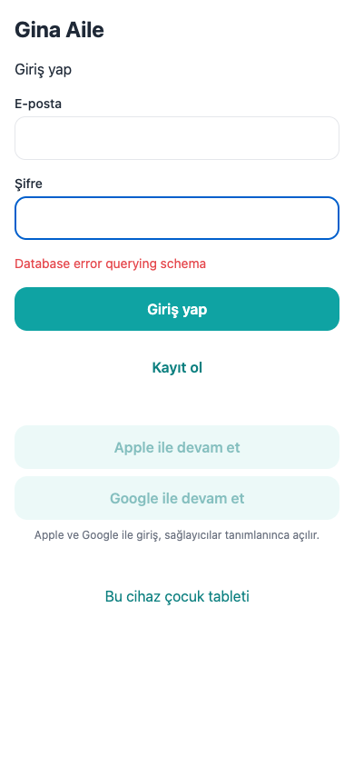

Korunan alt ekranlara erişim demo girişindeki sunucu hatası nedeniyle sağlanamadı. Aşağıdaki hata görüntüsü gerçek uygulamadan alındı. Maketler uygulama ekran görüntüsü olarak sunulmaz. Kimlik doğrulama düzeldikten sonra her ekran için gerçek görüntü eklenmelidir.
